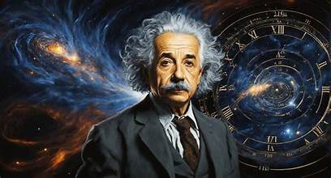
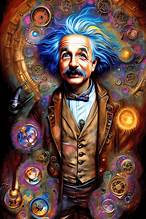

Fontosabb publikációi
- Albert Einstein: Zur Elektrodynamik bewegter Körper, Annalen der Physik, 322, 10, 891-921. (1905)
- Albert Einstein: Über einen die Erzeugung und Verwandlung des Lichtes betreffenden heuristischen Gesichtspunkt, Annalen der Physik, 17, 6, 132-148. (1905)
- Albert Einstein: Ist die Trägheit eines Körpers von seinem Energieinhalt abhängig?, Annalen der Physik, 323, 13, 639-641. (1905)
- Albert Einstein: Zur Theorie der Brownschen Bewegung, Annalen der Physik, 324, 2, 371-381. (1906)
- Albert Einstein: Die Feldgleichungen der Gravitation, Königlich Preussische Akademie der Wissenschaften: 844–847. (1915)
- Einstein, Albert; Podolsky, Boris; Rosen, Nathan: Can Quantum-Mechanical Description of Physical Reality Be Considered Complete?, Physical Review, 47, 10, 777–780. (1935)
Magyarul
- A különleges és az általános relativitás elmélete. A nagyközönség számára; ford. Vámos Ferenc; Pantheon, Bp., 1921 (A Pantheon ismerettára)
- A különleges és az általános relativitás elmélete. A nagyközönség számára; ford. Vámos Ferenc; 3., átdolg. kiad.; Pantheon, Bp., 1922
- Hogyan látom a világot; ford. Szécsi Ferenc; Kirjat Széfer, Lugoj, 1935
- Hogyan látom a világot; ford. Szécsi Ferenc, a tudományos rész (V. fejezet) ford. átnézte Somogyi Mihály; Faust, Bp., 1935
- Albert Einstein–Leopold Infeldː Hogyan lett a fizika nagyhatalom?; ford. Kiss Kázmér; Lux, Bp., 1946
- A speciális és általános relativitás elmélete; ford. Vámos Ferenc, bev., jegyz. Novobátzky Károly, szerk., utószó Maróti Lajos; Gondolat, Bp., 1963
- Válogatott tanulmányok; vál. Tőrös Róbert, ford. Nagy Imre; Gondolat, Bp., 1971
- Hogyan látom a világot?; ford. Szécsi Ferenc, utószó Lengyel Béla; Gladiátor, Bp., 1994
- Idézetek Einsteintől; összegyűjt., szerk. Alice Calaprice, előszó Freeman Dyson, ford. Faust Zsuzsa; Alexandra, Pécs, 1997
- Albert Einstein–Sigmund Freudː Háború, de miért?; esszé Iszak Aszimov, ford. Bodnár György, Tóth Gergely; Glória, Bp., 1998 (Hírességek levelei)
- A speciális és általános relativitás elmélete; ford. Vámos Ferenc, jegyz. Novobátzky Károly, jegyz. kieg., utószó Nagy Károly; Kossuth, Bp., 2003
- Albert Einstein válogatott írásai; vál., előszó Székely László; Typotex, Bp., 2005 (Principia philosophiae naturalis)
- Újabb idézetek Einsteintől; vál., szerk. Alice Calaprice, előszó Freeman Dyson, ford. Bujdosó István; Alexandra, Pécs, 2010

